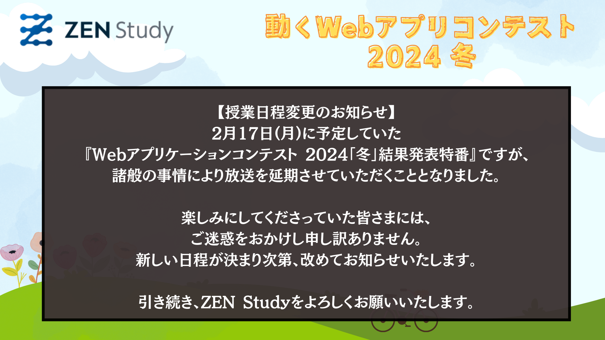

結果発表特番の放送延期のお知らせ
2025年2月14日
2月17日(月)に予定していた『Webアプリケーションコンテスト 2024「冬」結果発表特番』ですが、
諸般の事情により放送を延期させていただくこととなりました。
楽しみにしてくださっていた皆さまには、ご迷惑をおかけし申し訳ありません。
新しい日程が決まり次第、改めてお知らせいたします。
引き続き、ZEN Studyをよろしくお願いいたします。
